น้ำตกขั้นบันได
ดูบนแผนที่และวิธีไป วางแผนฟาร์ม
ชั้นล่างในป่ากองไฟ · Lv 26–34
ชั้นล่าง / ดันเจี้ยน
มอนในแมพ (9)
| มอน | Lv | ธาตุ | โซน |
|---|---|---|---|
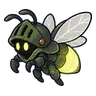 ด้วงหิ่งห้อยยักษ์ | 26–34 | ลม | ขั้นบันไดน้ำตก |
| ภูตละอองน้ำ | 26–33 | น้ำ | ขั้นบันไดน้ำตก |
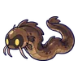 ปลาไหลมุดโคลน | 26–33 | น้ำ | ขั้นบันไดน้ำตก |
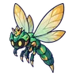 แมลงปอจ่าฝูง | 28–34 | ลม | ขั้นบันไดน้ำตก |
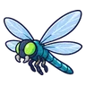 แมลงปอไพลิน · ร่างสายรุ้ง | 28–34 | ลม | ขั้นบันไดน้ำตก |
| ด้วงหิ่งห้อยยักษ์ · ร่างแสงฟ้า | 28–34 | ลม | |
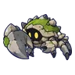 ปูหินโล่ใหญ่ | 28–34 | น้ำ | ขั้นบันไดน้ำตก |
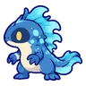 ซาลาแมนเดอร์น้ำ | 28–34 | น้ำ | ขั้นบันไดน้ำตก |
| 36–36 | น้ำ |
อุปกรณ์ที่ดรอปในแมพนี้
| ของ | โอกาสสูงสุด |
|---|---|
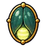 โล่ปีกแข็งหิ่งห้อย | 0.5% |
| 0.5% | |
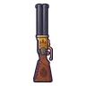 ลูกซองสองลำกล้อง | 0.25% |
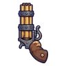 ปืนพกคู่หกลำกล้อง | 0.25% |
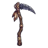 เคียวใหญ่หินเหล็กไฟ | 0.25% |
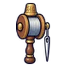 ด้ายเหล็กหลอดด้าย | 0.25% |
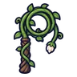 แส้เถาวัลย์ | 0.25% |
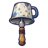 กระดิ่งวิญญาณถ้วยสังกะสี | 0.25% |
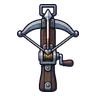 หน้าไม้เหล็กกล้าทหาร | 0.25% |
| 0.25% | |
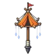 ไม้เชิดหุ่นเต็นท์ | 0.25% |
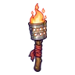 คบเพลิงกระป๋อง | 0.25% |
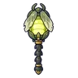 คบเพลิงหิ่งห้อยยักษ์ | 0.24% |
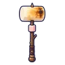 ค้อนยักษ์มาร์ชเมลโลว์ปิ้ง | 0.12% |
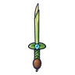 ดาบคู่ต้นกก | 0.12% |